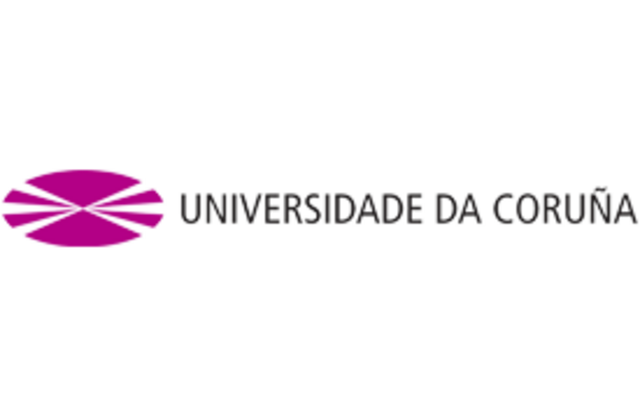
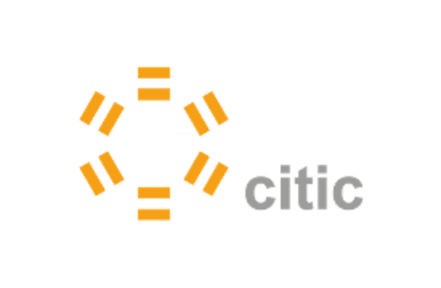

La Sociedad Española de Matemática Aplicada (SEMA), consciente de la necesidad de promover el interés de las jóvenes generaciones por la tarea de la creación científica, convoca el XXVII Premio SEMA «Antonio Valle» al Joven Investigador.
La convocatoria continúa una tradición, habitual tanto en las Artes como en las Ciencias, que contribuye a incrementar el papel positivo que el aprecio de la comunidad tiene en la vida científica de los investigadores, al tiempo que promueve y estimula el desarrollo en nuestro país de las Matemáticas y sus aplicaciones.
La Sociedad Española de Matemática Aplicada convoca el Premio SEMA «Antonio Valle» al Joven Investigador, que se concederá anualmente.
Son posibles candidatos todos los investigadores españoles que, a la fecha del límite de presentación de candidaturas, no rebasen la edad de 33 años.
En caso de bajas por maternidad, se aplicará una ampliación de esta edad en un año por cada hijo/a. En el caso de bajas por paternidad, accidente o enfermedad, se ampliará el plazo en un periodo igual al de la interrupción, redondeándolo al alza por meses completos.
También pueden ser candidatos aquellos investigadores de otras nacionalidades que tengan un puesto de trabajo permanente en una universidad o centro de investigación español y cumplan la condición de edad. No pueden concurrir al Premio candidatos galardonados en convocatorias precedentes.
El Premio está destinado a promover la excelencia en el trabajo matemático original en todas las ramas de las Matemáticas que tienen una componente aplicada. Con el límite de edad fijado se pretende que los solicitantes hayan tenido tiempo de desarrollar su creatividad matemática de manera independiente, tras la etapa formativa correspondiente a la tesis doctoral. El Premio tiene por objetivo reconocer las capacidades demostradas y la contribución personal de nuestros/as jóvenes investigadores/as, al tiempo que contribuir a abrirles el camino en su periodo de madurez.
Los méritos serán juzgados por un Comité Científico de cinco miembros, nombrado por el Consejo Ejecutivo de la Sociedad entre investigadores de probado prestigio. Este Comité tendrá su propio reglamento de funcionamiento. En todo caso, será presidido por el presidente de la SEMA o persona en quien delegue, no pudiendo ser miembros del Comité Científico más de dos miembros del Consejo Ejecutivo.
Los/as solicitantes habrán de presentar, dentro del plazo que se cite, una memoria exponiendo su trayectoria científica y los méritos que concurren, un breve currículum, así como otros documentos que puedan ser pertinentes para acreditar sus contribuciones originales a las Matemáticas y sus aplicaciones. Las candidaturas pueden ser presentadas también por otros investigadores. El Comité se reserva el derecho de recabar la información complementaria necesaria del candidato/a o de quien le haya presentado.
La persona galardonada con el Premio recibirá de la Sociedad un Diploma acreditativo y una cuantía que será establecida en cada convocatoria por la Sociedad.
La persona galardonada con el Premio se compromete a enviar al presidente de la SEMA, en un plazo máximo de seis meses a contar desde la fecha de entrega del premio, un artículo de investigación original o un resumen de su trabajo de investigación escrito con formato de artículo científico, con una extensión mínima de quince páginas, que podrá ser publicado en SEMA Journal tras el proceso de revisión reglamentado.
El fallo del concurso es irrevocable. El Comité acompañará la concesión del Premio de una exposición de los méritos hallados en la persona galardonada. Por lo demás, las deliberaciones y resoluciones del Comité serán regidas por su reglamento.
La fecha límite de presentación de candidaturas es el 31 de marzo de 2024. Podrán concursar, por tanto, las personas que hayan nacido después del 31 de marzo de 1990.
La documentación presentada constará de la Memoria y el currículo citados en el apartado 5 de la convocatoria, junto con una copia de las cinco contribuciones más importantes del aspirante a las Matemáticas y sus aplicaciones.
La documentación debe presentarse en formato electrónico y ser dirigida a la dirección de correo electrónico:
| joven-investigador@SEMA.org.es |
| Asunto: Premio SEMA Joven Investigador 2024 |
La cuantía del Premio es de 1.500 euros. El Premio es indivisible. Además, la persona galardonada quedará eximida del pago de las cuotas como socio de la SEMA correspondientes a los años 2024 y 2025. En caso de no ser miembro de la SEMA, pasaría a serlo con fecha 1 de enero del 2024.
El Premio se fallará antes del 1 de mayo de 2024 y será entregado en el marco del próximo XXVIII CONGRESO DE ECUACIONES DIFERENCIALES Y APLICACIONES / XVIII CONGRESO DE MATEMÁTICA APLICADA (CEDYA/CMA), que se celebrará del 24 al 28 de junio de 2024 en Bilbao. La persona receptora del premio deberá impartir una conferencia de 30 minutos sobre un tema de su elección.
Mª Eugenia Pérez-Martínez
Universidad de Cantabria
El libro, en francés, publicado en enero de este año, se sitúa a caballo entre la Epistemología, la modelización matemática (en Biología, Ecología, Mecánica y Economía) y la teoría matemática de los sistemas dinámicos. Como continuación a la visión pionera en [1] de la conexión entre la dialéctica en las ciencias y los sistemas dinámicos, este libro, como su nombre indica contiene dos partes en las dos ramas de la filosofía y las matemáticas arriba mencionadas: la epistemología y los sistemas dinámicos. A los razonamientos y demostraciones se le suman numerosas explicaciones en ambas disciplinas y en relación con la interpretación real de los fenómenos que se estudian en los distintos modelos. La evolución, y la no instantaneidad no pueden ser más patentes a lo largo de todo el libro.
Del libro, p. 88, extraemos una consideración que sintetiza esta interacción dialéctica-sistemas dinámicos: «La dialéctica no es una ciencia propiamente dicha, sino un método de estudio de los sistemas complejos en evolución, y sus principios son una especie de caja de herramientas, a la que la teoría de los sistemas dinámicos proporciona un cierto marco.»
Asimismo, como los autores indican en la introducción, las dos partes del libro, «Elementos de la epistemología dialéctica» (parte A, capítulos 1-5) y «Cómo la dialéctica emana de los sistemas dinámicos» (parte B, capítulos 6-13), pueden ser vistas como una colección de ideas epistemológicas A seguida de un largo apéndice B que permite apuntalar ciertas ideas, o como una colección de sistemas dinámicos B precedidos de una introducción A que marca la elección de los problemas tratados. Así es que se deja libertad al lector en la secuencia de los temas.
En la parte A, mediante tres figuras alegóricas, se nos muestran tres facetas esenciales de la ciencia (cf. capítulo 4):
Su carácter aproximado, razonando que no hay ni habrá ciencia exacta ni global (del todo). Se simboliza, en una figura desarrollada en [1], una superficie que representa todos los fenómenos del mundo real y distintas aproximaciones para las distintas teorías científicas, que pueden estar contenidas unas en otras o pueden coincidir puntualmente.
Su carácter inteligible: el conocimiento científico es asequible para los observadores. Para ello, se ha elegido un grabado de F. Kupka and E. P. Deloche, sacado del trabajo póstumo de Elisée Reclus (1830-1905) «L’homme et la Terre», del que se infiere que el conocimiento científico viene de la naturaleza misma, no de principios exteriores.
Su carácter evolutivo; las fases del descubrimiento científico (preparación, iluminación y verificación) se sintetizan en una serie de figuras desarrolladas en [1], mediante una hábil manipulación de pseudo-triángulos de Knizsa (ver figura esquemática).
De los seis principios epistemológicos, mencionamos tres que merecen especial atención por parte de los autores.
La fuerza creadora de la contradicción: principio basado en la contradicción, entendida como oposición de tendencias entre los elementos implicados en un proceso evolutivo (y no como una imposibilidad lógica). Estas tendencias antagónicas generan a menudo fenómenos dinámicos de naturaleza cíclica cuya amplitud depende de la configuración inicial. Una buena ilustración lo proporcionan los sistemas de tipo predador–presa (cf. capítulos 3, 5 y 8)
Otro principio importante relacionado con los sistemas dinámicos se refiere al paso de lo cuantitativo a lo cualitativo. Esto constituye un marco que permite comprender muchas situaciones, científicas o no, que pueden parecer incongruentes desde el estricto punto de vista de la lógica formal. Por ejemplo, las aproximaciones numéricas en los sistemas dinámicos de H. Poincaré pueden ayudar en el esclarecimiento cualitativo de determinados fenómenos (cf. Capítulos 5 y 12); asimismo, las simulaciones numéricas pueden desempeñar un papel importante en la comprensión geométrica del caos (cf. p. 206, capítulo 13).
El otro principio, relativamente nuevo en la dialéctica, introducido en [1], está relacionado con los comportamientos erráticos cerca del «atractor». En él se inscriben los fenómenos de caos determinista, y afecta principalmente a sistemas dinámicos en los que intervienen más de dos agentes. Estos fenómenos, detectados en investigaciones relativamente recientes (segunda mitad del siglo XX), están presentes en muchos más sistemas dinámicos de los que uno puede pensar (cf. capítulos 5 y 13).
Los capítulos 7-10 y 12-13 contienen sistemas dinámicos en dimensiones superiores a dos, y distintos tipos de «atractores».
Son muy diversas las cuestiones que se abordan en los sistemas dinámicos planteados (revisitados o nuevos, apartado B), atendiendo a la estabilidad del sistema y a una causalidad diferida. Los sistemas de depredación, la depredación y el comensalismo, o los ciclos «hubris» (desmesura de los predadores)- némesis (castigo, restablecimiento del orden, quasi-desaparición de los predadores)-resiliencia (proliferación de las presas), son considerados desde múltiples aspectos (cf. capítulos 5 y 6) y sirven de modelos en Economía (cf. capítulos 5 y 9). Se trata de modelos matemáticos bastante generales que pueden esclarecer fenómenos reales de diversas naturalezas. Están llenos de parámetros (eficiencia, encuentros, capacidad del medio constante o variable, interacción entre especies, independencia de presas, etc.) cuyas modificaciones conducen a situaciones muy distintas, desde cíclicas y previsibles, con o sin puntos de equilibrio, hasta imprevisibles y caóticas (capítulos 5, 6 y 13). Las perturbaciones con pequeños parámetros en los sistemas dinámicos también son objeto de análisis (cf. capítulos 10, 12 y 14).
En el apéndice C, los autores dan unos útiles sobre la teoría matemática de los sistemas dinámicos. El libro se acompaña de una presentación de Paolo Quintili, profesor de Historia de la Filosofía en la Universidad de Roma Tor Vergata.
Los títulos de las secciones del índice general, hablan por sí mismos; son muy significativos en relación con el contenido que se puede esperar; abajo una traducción de dicho índice, el contexto de los autores en la materia, y unas frases del prefacio de los autores que resumen el motivo y la finalidad del libro.
«Este libro es el resultado de la reflexión sobre un cierto número de problemas de los sistemas dinámicos (particularmente en dinámica ecológica) desarrollados o revisados con el objetivo de comprender los elementos de la evolución biológicos que salen de la idea elemental de la supervivencia del más apto, y más precisamente que generan nuevas estructuras, a menudo dinámicas, que algunos llaman emergentes. Esto nos permite explicar cómo mecanismos naturales, sin el menor finalismo, conducen, a la formación de configuraciones estables de carácter variado, constante o pulsante, involucrando a una diversidad de especies que interactúan. El papel de la estabilidad está presente en todas partes y conduce a fenómenos notables, como sincronizaciones espontáneas, comunidades de especies puramente dinámicas (sin punto de equilibrio, estable o no) y muchos comportamientos que parecen paradójicos desde el punto de vista de la optimización (cuyo papel es restringido en la teoría de sistemas dinámicos). Esto conduce naturalmente a una reflexión sintética, de carácter epistemológico para extraer ideas generales que permitan comprender mejor la causalidad involucrada en la evolución biológica».
Évariste Sanchez Palencia: Director de Investigación Emérito en el CNRS francés y miembro de la Académie des Sciences de Paris.
Nació en Madrid, y estudió en la ETSI Aeronáuticos de Madrid, donde se licenció en 1964; actualmente es Doctor Honoris Causa por la Universidad Politécnica de Madrid. Su ámbito científico se ha desarrollado en el CNRS, en las áreas de la mecánica teórica y la matemática aplicada. Cuenta en estos ámbitos con más de 50 años de experiencia investigadora y con un reconocimiento científico en todo el ámbito mundial.
Su investigación en Epistemología, desde hace 20 años, se centra en el carácter esencialmente aproximado y evolutivo del conocimiento científico y en la teoría de los sistemas dinámicos, que da una base inteligible al movimiento dialéctico de la naturaleza. En este campo cuenta con los libros [1] y [2], además de una serie de artículos, muchos de ellos se pueden descargar en la página web http://www.academie-sciences.fr/fr/Liste-des-membres-de-l-Academie-des-sciences-/-S/evariste-sanchez-palencia.html
Jean-Pierre Françoise: Profesor Emérito de Sorbonne-Université.
Nació en Grenoble, y estudió en la Université de Grenoble-Alpes, donde se licenció en Matemáticas, y se doctoró en 1980 (Institut Fourier). Su ámbito científico se ha desarrollado en el CNRS y la Université de Pierre et Marie-Curie, en los campos del análisis global y de las ecuaciones diferenciales ordinarias, habiendo sido también investigador y profesor en diversas universidades extanjeras.
En relación con su investigación en sistemas dinámicos, mencionamos sus aportaciones en las teorías de bifurcaciones, perturbaciones y oscilaciones, de aplicación en dinámica de poblaciones entre otros. En el tema, cuenta con los libros [3] y [4], además de diversas aportaciones que pueden descargarse en la página web https://cv.hal.science/jean-pierre-francoise.
E. Sanchez-Palencia. Promenade dialectique dans les sciences, Hermann, 2012. Traducido a otros tres idiomas, entre ellos el castellano: Paseo dialéctico por las ciencias, Ed. Universidad de Cantabria, Santander, 2015. Tradución al italiano: Passeggiata dialettica tra le scienze, UNICOPLI, 2018. Traducción al inglés: Dialectic walk in the sciences, KDP, 2023.
E. Sanchez-Palencia. Varias contribuciones en Science et culture. Repères pour une culture scientifique commune, con Jean-Pierre Kahane, Jacques Haïssinski y Hélène Langevin-Joliot, Ed. Apogée/Espace des sciences, Rennes, 2015.
Jean-Pierre Françoise. Géométrie analytique et système dynamique. Presses Universitaires de France, París, 1995.
Jean-Pierre Françoise Oscillations en biologie: Analyse qualitative et modèles. Mathématiques et applications, 46, Springer 2005.
Con estos antecedentes, el libro es altamente recomendado a investigadores en el tema, y a estudiantes de matemáticas y ecología entre otros, tanto en programas de grado, como de máster o sénior en la Universidad española. La primera parte del libro A no contiene fórmulas, y puede ser de utilidad para estudiantes de filosofía interesados en la dialéctica. Además, determinadas historias en las que intervienen las matemáticas son tratadas a nivel divulgativo y esto hace que una buena parte del libro pueda ser entendida por estudiantes de historia de las ciencias, u otras personas interesadas en la divulgación científica.
Parte A.- Elementos de la epistemología dialéctica
Capítulo 1- La ciencia, ¿es exacta o aproximada?
1.1. Caída de cuerpos: Caída de cuerpos pequeños. Caída de hojas. Caída de gatos
1.2. Recapitulemos. Teorías y modelos.
Capítulo 2- Modelos y no linealidad.
2.1. Una propiedad matemática.
2.2. ¿Como funciona una línea de metro?
2.3. ¿Para qué sirve esto? Ciencia y opinión.
Capítulo 3- ¿Es la epistemología naturalmente dialéctica?
3.1. Los problemas de evolución.
3.2. Primeras nociones de dialéctica.
Capítulo 4- La ciencia como estudio de causas eficientes.
4.1. Causalidad y finalismo. El enfoque científico.
4.2. El estatus de las ciencias en tres figuras. El estatus especial de las matemáticas.
4.3. Dialéctica de la ciencia y la técnica
4.4. El rigor en las matemáticas y en las ciencias naturales.
4.5. Notas sobre cuestiones del reduccionismo y de la emergencia.
Capítulo 5- La contribución de los sistemas dinámicos a la dialéctica.
5.1. Generalidades.
5.2. Sobre cómo la oposición de tendencias engendra oscilaciones.
5.3. Sobre la eficiencia en los sistemas de depredación.
5.4. Lo que nos enseña el sistema de depredación-comensalismo.
5.5. Sobre la economía.
5.6. Un comentario sobre el tiempo y la escritura.
5.7. Sistemas sin punto de equilibrio.
5.8. Estabilidad versus optimización.
5.9. Los atractores cíclicos.
5.10. Emparejamiento y sincronización.
5.11. Comentario sobre el caos determinista.
5.12. La metodología dialéctica.
Parte B. Sobre cómo la dialéctica emana de los sistemas dinámicos.
Capítulo 6- El sistema depredador–presa.
6.1. El sistema depredador–presa.
6.2. El papel de la eficiencia. Modos normal y paradójico.
6.3. Los ciclos Hubris-Némesis-Resiliencia.
6.4. Sistemas de mutualismo y de comensalismo.
6.5. Complementos.
Capítulo 7- Un depredador y dos presas.
7.1. El modelo.
7.2. Paradojas relacionadas con la eficencia. El papel del mimetismo.
7.3. Variantes.
7.4. Complemento. Eficiencias lentamente oscilantes.
Capítulo 8- El sistema depredación-comensalismo.
8.1. El modelo. Varias configuraciones y la biestabilidad
8.2. ¿Cómo podemos llegar al atractor no trivial?
8.3. Otra posibilidad con un segundo depredador.
Capítulo 9- Un modelo de economía global y problemas de reparto.
9.1. Un modelo de economía global.
9.2. Consecuencias diversas.
9.3. Tendencia a la baja en las tasas de beneficio.
9.4. Problemas de reparto. «Uberización» y descentralización
Capítulo 10- Sistemas con un atractor dinámico sin equilibrio interno.
10.1-Introducción.
10.2. Dos depredadores y una presa.
10.3. Sobre el (falso) principio de exclusión competitiva.
10.4. Ejemplos de persistencia por depredación.
10.5. El papel de la dinámica y la topología.
10.6. Ejemplos en dimensión cuatro.
10.7. Propiedades de contaminación por producto cartesiano y perturbación.
Capítulo 11- Consideraciones sobre sexualidad y partenogénesis.
11.1. Introducción.
11.2. Modelos con varios tipos de fecundación.
11.3. Resultados con o sin fecundación.
11.4. Fecundación alternativa.
11.5. Vuelta sobre sexualidad y evolución, y complementos.
Capítulo 12- Sobre la sincronización de sistemas por pequeñas interacciones.
12.1. Introdución.
12.2. Forzando el periodo.
12.3. Sincronización de dos sistemas.
12.4. Sincronización de más de dos sistemas.
12.5. Ejemplo. El castillo de cartas dinámico.
12.6. Complemento. El caos de Cartwright-Littlewood.
Capítulo 13- Atractores extraños y caos determinista.
13.1. Introducción.
13.2. Un mecanismo divertido.
13.3. La transformación del panadero y la herradura de Smale.
13.4. La sección de Poincaré; el atractor de Rössler.
13.5. Qué recordar.
13.6. Breve historia de la teoría del caos determinista.
Parte C. Apéndice.
Capítulo 14 - Generalidades sobre las ecuaciones diferenciales, los sistemas dinámicos y los procesos deterministas.
14.1. Ecuaciones y sistemas diferenciales autónomos y no autónomos.
14.2. El análisis cualitativo.
14.3. Los puntos de equilibrio en el plano.
14.4. Los puntos de equilibrio en dimensión 3.
14.5. Ciclos periódicos y secciones de Poincaré.
14.6- Dependencia con respecto a parámetros y ecuaciones variacionales.
14.7- La ecuación logística.
14.8- Escisión y perturbación.
14.9- Atractores y «attractor blocks».
14.10 - Estabilidad estructural y teoría de la bifurcación.
Santander, January 15-19, 2024
https://gacsantander2024.unican.es/
The Santander Workshop on Geometric and Algebraic Combinatorics will take place at Universidad de Cantabria in Santander (Spain), in January 15-19, 2024, with its format consisting of two mini courses, eight invited talks, plus short talks and posters contributed from participants.
Eran Nevo: Algebraic shifting: variations and connections.
Rekha Thomas: Graphical Designs and Graph Sparsifiers.
Karim Adiprasito.
Mónica Blanco Gómez, Universidad de Cantabria
Arnau Padrol, Universitat de Barcelona
Julian Pfeifle, Universitat Politècnica de Catalunya
Vincent Pilaud, CNRS & LIX, École Polytechnique
Francisco Santos, Universidad de Cantabria
Comité organizador de ETAMM 2024
A Coruña, 20-24 de mayo de 2024
https://dm.udc.es/etamm24/


Nos complace informaros que la conferencia internacional 3rd Emerging Trends in Applied Mathematics and Mechanics (ETAMM 2024) se organizará del 20 al 24 de mayo de 2024 en la Universidad de Coruña. En concreto, tendrá lugar en la ETS de Náutica y Máquinas, ubicada cerca de la playa de Riazor, en el casco urbano de A Coruña.
Todos los detalles del congreso se pueden encontrar en la web: https://dm.udc.es/etamm24/.
En todo caso, el envío de resúmenes ya está abierto, hasta el 1 de febrero de 2024.
Este encuentro es la tercera edición de una serie de conferencias en Matemática Aplicada. Las ediciones anteriores tuvieron lugar en junio de 2016 en la Universitè de Perpignan Via Domitia (ETAMM 2016) y en junio de 2018 en la Universidad Jagellónica de Cracovia (ETAMM 2018).
Los ponentes invitados confirmados son Igor Bock (Eslovaquia), Zhenhai Liu (China), Stanisław Migórski (Polonia), Peregrina Quintela Estévez (España), Meir Shillor (EE.UU.), Mircea Sofonea (Francia), Domingo Tarzia (Argentina), Dan Tiba ( Rumania) y Juan Manuel Viaño Rey (España).
Estaremos encantados de recibiros en A Coruña.
Francisco de la Hoz, Carlos Gorria, Silvia Marcaida
Universidad del País Vasco (UPV/EHU)
https://www.sema.org.es/es/cedya2024/

Entre el 24 y el 28 de junio de 2024 se celebrará el XXVIII CEDYA/XVIII CMA, congreso bienal fomentado por la SEMA. En esta ocasión, según decisión del comité ejecutivo de la SEMA, la organización del evento recaerá en la Universidad del País Vasco UPV/EHU en colaboración con el Instituto BCAM de Bilbao. El programa de actividades académicas tendrá lugar en las instalaciones de la Facultad de Ciencia y Tecnología de la UPV/EHU, localizada en el campus de Leioa a donde se accede desde Bilbao con transporte público.
El comité científico del congreso está compuesto por:
Begoña Cano Urdiales (Universidad de Valladolid).
Elena Gaburro (INRIA et Université de Bordeaux).
Carlos Garcia Cervera (University of California).
David Lannes (CNRS et Université de Bordeaux).
Maria Luisa Rapun Banzo (Universidad Politécnica de Madrid).
Carmen Rodrigo Cardiel (IUMA y Universidad de Zaragoza).
Luis Vega BCAM y Universidad del País Vasco UPV/EHU).
A falta de varias confirmaciones, podemos adelantar que entre los conferenciantes plenarios se contará con la presencia de:
Mária Lukácová-Medvidová (Institute of Mathematics Johannes Gutenberg University Mainz Mainz Universiy. Germany).
Esmeralda Mainar Maza (Universidad de Zaragoza).
Ana Mancho (Instituto de Ciencias Matemáticas, ICMAT, Madrid).
David Pardo Zubiaur (BCAM - UPV/EHU Ikerbasque).
Malgorzata Peszynska (Department of Mathematics, Oregon State University).
Giancarlo Sangalli (Università di Pavia, Italy).
Katharina Schratz (Sorbonne Université, París).
Adelia Sequeira (Department of Mathematics at the IST, University of Lisbon).
En el comité organizador colaboraremos:
Elisabete Alberdi Celaya.
Julen Álvarez Aramberri.
Agurtzane Amparan Larrabaster.
Gorka Armentia Galán.
Francisco de la Hoz Méndez.
Luca Fanelli.
Carlos Gorria.
Iker Malaina Celada.
Silvia Marcaida Bengoechea.
Virginia Muto Foresi.
Confiamos en que esta edición continúe siendo una referencia como de punto de encuentro de la comunidad matemática para la presentación, análisis y debate de iniciativas e investigaciones novedosas y que sea una experiencia enriquecedora para participantes y organizadores. Esperamos contar con vuestra participación y propuestas en forma de contribuciones orales y escritas en las áreas temáticas y minisimposios.
Iremos actualizando la información general y el programa en la web: https://www.sema.org.es/en/cedya2024/.
Comité organizador local
https://www.unioviedo.es/fgs2024/
FGS2024
Gijón, 18-21 de junio de 2024
Desde 1980 se celebra cada dos años el congreso franco-alemán de optimización. En cada edición, un tercer país es invitado a organizar el evento. Para la vigésimo primera edición, el país elegido ha sido España. En 2024 celebraremos del 18 al 21 de junio en Gijón la 21 French-German-Spanish Conference on Optimization, FGS2024.
El congreso se celebrará en la Escuela Politécnica de Gijón, en las mismas instalaciones que muchos ya conocéis por el CEDYA CMA de Gijón en 2021. Queremos agradecer desde aquí el apoyo de SEMA a la celebración de este evento, en el que uno de los conferenciantes plenarios y algunos miembros del comité científico y del comité organizador local son miembros de SEMA.
Participación. La estructura del congreso será parecida a la que venimos usando en la sociedad para los últimos CEDYA CMA o para la celebración del ICIAM2019 de Valencia: se podrá participar mediante la presentación de un mini-simposio o de una contribución individual sobre algún tema relacionado con la optimización o sus aplicaciones.
Algunos de los temas tratados en ediciones anteriores fueron:
La lengua vehicular del congreso será el inglés.
Conferenciantes plenarios. A lo largo de los 4 días de congreso habrá doce charlas invitadas a cargo de expertos de primer nivel en diferentes aspectos de la optimización, abarcando temas como análisis variacional, procesado de imágenes, análisis de datos, teoría de control, investigación de operaciones, problemas inversos, optimización combinatoria, o aprendizaje automático.
Aris Daniilidis (Technische Universität Wien)
Sourur Elloumi (École Nationale Supérieure de Techniques Avancées, Paris)
Gersende Fort (Université de Toulouse)
Emmanuel Trélat (Laboratoire Jacques-Louis Lions, CNRS Paris)
Christoph Brune ( Universiteit Twente)
Gabriele Eichfelder (Technische Universität Ilmenau)
Max Klimm (Technische Universität Berlin)
Enrique Zuazua (Friedrich-Alexander-Universität)
María Josefa Cánovas (Universidad Miguel Hernández)
Emilio Carrizosa (Universidad de Sevilla)
Anna Doubova (Universidad de Sevilla)
Karl Kunisch (Universität Graz)
1 de octubre de 2023: se abre el plazo para la presentación de mini-simposios y contribuciones individuales.
14 de febrero de 2024: se cierra el plazo para la presentación de mini-simposios y contribuciones individuales.
14 de febrero de 2024: se abre el periodo de inscripción.
14 de marzo de 2024: comunicación sobre la aceptación de las propuestas científicas.
31 de marzo de 2024: último día para enviar los resúmenes de las contribuciones a los mini-simposios.
15 de abril de 2024: último día para la inscripción con descuento.
31 de mayo de 2024: último día para la inscripción.
18 de junio de 2024: empieza el congreso.
21 de junio de 2024: fin del congreso.
Estaremos encantados de contar con vuestra participación.
A Coruña, June 10-14, 2024
https://bail2024.udc.es


The Department of Mathematics at the University of A Coruña are proud to host the International Conference on Boundary and Interior Layers, BAIL 2024, from 10th to 14th of June, 2024.
The BAIL conferences focus on all aspects of computational and analytical methods for problems whose solution shows sharp layers, and singular perturbation problems. Special emphasis is laid on the mathematical foundation of such methods. Topics in any scientific field (fluid mechanics, semiconductor modeling, control theory, aerodynamics and hydrodynamics, chemical kinetics, etc.) in which boundary and interior layers occur are welcome.
The first BAIL conference was organized by Prof. John Miller in Trinity College Dublin, Ireland, in 1980. Apart from two hiatuses, BAIL conferences have been held biennially since then:
| Scientific Committee | Organizing Committee |
| María Gabriela Armentano (Universidad de Buenos Aires) | Marta Benítez García (UDC) |
| Gabriel Barrenechea (University of Strathclyde) | María González Taboada (UDC) Chair |
| Petr Knobloch (Charles University) | Andrés Prieto Aneiros (UDC) |
| Natalia Kopteva (University of Limerick) | José Manuel Rodríguez Seijo (UDC) |
| Julia Novo (Universidad Autónoma de Madrid) | Raquel Taboada Vázquez (UDC) |
|
| Carlos Vázquez Cendón (UDC) |
|  |  |  |  |
Nos complace anunciar que el 8º Encuentro ALAMA: Álgebra Lineal, Análisis Matricial y Aplicaciones (ALAMA2024) se llevará a cabo en Gijón, España, del 12 al 14 de junio de 2024.
Visite https://www.unioviedo.es/alama2024/ para obtener información sobre el congreso, incluida la lista de ponentes invitados.
Le invitamos cordialmente a preparar un minisimposio o enviar una comunicación individual a cualquiera de las áreas acordes con la temática de la conferencia. La convocatoria oficial será desde el 15 de octubre de 2023, hasta el 14 de febrero de 2024.
Bedlewo, June 9-15, 2024,
gva.karlin.mff.cuni.cz
We are pleased to announce the upcoming conference Geometric And Variational Analysis In Memory of Jan Malý. This event promises to be a gathering of leading minds in the field, and we cordially invite you to participate.
Date: Sunday, June 9, to Saturday, June 15, 2024.
Location: Bedlewo Conference Center, Poland
Participants will have the opportunity to contribute through short oral presentations or poster sessions. While we reserve the right to select short talk presentations if necessary due to a high number of submissions, please rest assured that everyone will have the opportunity to present their work during the poster sessions.
Regular Participant Fee: 1400 PLN / EUR 315 / USD 330.
Students and postdocs may apply for a reduced rate, and the final price will be determined once all support applications have been processed.
The conference fee includes accommodation, meals, and access to both scientific and social programs.
To register for the conference, please fill out the electronic registration form at gva.karlin.mff.cuni.cz.
P. Goldstein, S. Hencl, V. Magnani and J. Onninen.
Alcalá de Henares, July 3-5, 2024
https://dmd2024.web.uah.es

The Discrete Mathematics Days 2024 (DMD 2024) will be held at Universidad de Alcalá, in Alcalá de Henares, Spain, on July 3-5, 2024.
The main focus of this international conference is on current topics in Discrete Mathematics, including (but not limited to):
This 2024 edition is a satellite conference of the 9th European Congress of Mathematics.
The previous three editions were held in Santander in 2022 (postponed from 2020), Sevilla in 2018 and Barcelona in 2016 ), inheriting the tradition of the Jornadas de Matemática Discreta y Algorítmica (JMDA), the Spanish biennial meeting on Discrete Mathematics started in 1998.
The program consists of four plenary talks, a number of shorter contributed talks in two parallel sessions, and a poster session. The plenary speakers are:
Julia Böttcher, The London School of Economics and Political Science.
Irit Dinur, The Weizmann Institute of Science.
Arnau Padrol, Universitat de Barcelona.
Alex Scott, University of Oxford.
The important dates will be the following:
April 7, 2024: Deadline for submitting extended abstracts.
May 17, 2024: Communication of acceptance.
May 31, 2024: Deadline for submitting final versions of accepted contributions.
May 31, 2024: Deadline for early registration.
A call for contributed talks and posters will be open soon. They will be reviewed and approved by the Scientific Committee, consisting of:
Aida Abiad, Eindhoven University of Technology.
Marie Albenque, Université Paris Cité.
Sergio Cabello, Univerza v Ljubljani.
Pablo Candela, Universidad Autónoma de Madrid.
Vida Dujmović, University of Ottawa.
Alberto Espuny Díaz, Technische Universität Ilmenau.
Stefan Felsner, Technische Universität Berlin.
Delia Garijo (co-chair), Universidad de Sevilla.
Gyula Károlyi, Eötvös University and Renyi Institute Budapest.
Dan Král’, Masaryk University Brno.
Marc Noy, Universitat Politècnica de Catalunya.
Diego Ruano, Universidad de Valladolid.
Francisco Santos (co-chair), Universidad de Cantabria.
Pascal Schweitzer, Technische Universität Darmstadt.
María Serna, Universitat Politècnica de Catalunya.
Maya Stein, Universidad de Chile.
Julia Wolf, University of Cambridge.
Öznur Yaşar, Kadir Has University.
For more information please visit the conference website.
Guillermo Esteban, Universidad de Alcalá.
Clemens Huemer, Universitat Politècnica de Catalunya.
David Orden (chair), Universidad de Alcalá.
Marino Tejedor-Romero, Universidad de Alcalá.
Lluís Vena, Universitat Politècnica de Catalunya.
Título: Analysis and optimal control for chemotaxis-consumption models.
Doctorando: André Luiz Corrêa Vianna Filho.
Director: Francisco Manuel Guillén González. Departamento de de Ecuaciones Diferenciales y Análisis Numérico e Instituto de Matemáticas-IMUS.
Centro: Universidad de Sevilla.
Defensa: 19 de julio de 2023.
Calificación: Sobresaliente cum Laude.
In this thesis we investigate a class of chemotaxis-consumption models in bounded domains of dimension N = 1,2,3. In the Introduction, we present the models that are studied along the thesis and the available previous literature about the mathematical analysis, numerical analysis and optimal control of these models. Next, we introduce the main contributions of the thesis jointly with its main results. Chapter 1 contains some preliminary results that are used through out the thesis.
In Chapter 2, we identify a change of variables and an energy inequality which helps us to establish a priori estimates for the solutions. Then, under mild regularity assumptions on the domain and through the convergence of solutions of adequate truncated models, two main results are proved: existence of uniform in time weak solutions in 3D domains, and uniqueness and regularity in 2D (or 1D) domains.
Using the theory developed in Chapter 2, in Chapter 3, we propose and study a convergent, positivity preserving and conservative time discrete scheme for the chemotaxis-consumption model. To achieve it, we combine a Backward Euler implicit time discrete scheme with the use of the aforementioned change of variables and an upper truncation of the density of cells variable in the non-linear terms of the equations. We prove existence of solution to the resulting time discrete scheme, uniform in time a priori estimates and convergence towards a weak solution of the chemotaxis-consumption model.
In the sequel we approach optimal control problems subject to a controlled chemotaxis-consumption model in bounded domains during a finite time interval, where the control acts through a bilinear term in the chemical signal equation. In Chapter 4, we approach an optimal control problem related to weak solutions of the controlled chemotaxis-consumption model. We establish the existence of weak solutions satisfying an energy inequality, prove the existence of optimal control subject to bounded controls and discuss the relation between the considered control problem and two other related ones that might be of interest.
In Chapter 5, we study an optimal control problem subject to strong solutions of the aforementioned controlled chemotaxis-consumption model. First we prove a regularity criterion that allows us to get existence and uniqueness of global-in-time strong solutions and show the existence of an optimal solution. Next, using a Lagrange multipliers theorem, we establish first order optimality conditions for any local optimal solution, proving existence, uniqueness and regularity of the associated Lagrange multipliers.
Finally, in the conclusions chapter, we discuss a series of possible future works related to the results presented in this thesis.

Basque Center for Applied Mathematics - BCAM, offers two positions as Postdoctoral Fellow on PDEs and Mathematical Analysis for Fluid Mechanics in the Applied Analysis group. The selected candidates will work under the supervision of one the permanent members of the group: Francesco Fanelli, Arnab Roy and Arghir Zarnescu, to be determined subsequently. This position is funded by Severo Ochoa project.
Deadline: January 12th 2024, 14:00 CET.
Applications will be evaluated in a continuous manner, with a response period no longer than 4 weeks after the call deadline.
Contact: recruitment@bcamath.org.